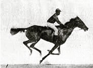
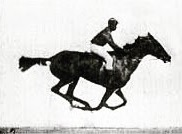
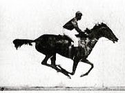
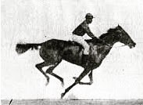
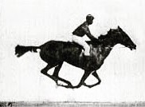
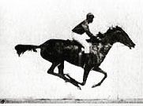

Roundhay Garden Scene (1888)
The Roundhay Garden Scene is only two seconds long but it is considered the oldest surviving film in existence.
  The Roundhay Garden Scene is only two seconds long but it is considered the oldest surviving film in existence.
  No one person invented cinema. However, in 1891 the Edison Company successfully demonstrated a prototype of the Kinetoscope, which enabled one person at a time to view moving pictures.
The first public Kinetoscope demonstration took place in 1893. By 1894 the Kinetoscope was a commercial success, with public parlours established around the world.
The first to present projected moving pictures to a paying audience were the Lumière brothers in December 1895 in Paris, France. They used a device of their own making, the Cinématographe, which was a camera, a projector and a film printer all in one.
Color was first added to black-and-white movies through hand coloring, tinting, toning and stencilling.
Color was more widely used after the introduction of Technicolor's three‑colour process in 1932. Gone With the Wind and The Wizard of Oz (both 1939) used this process.
Thomas Edison had used perforated 35mm film in the Kinetoscope, and in 1909 this was adopted as the worldwide industry standard. The picture had a width-to-height relationship—known as the aspect ratio—of 4:3 or 1.33:1. The first number refers to the width of the screen, and the second to the height. So for example, for every 4 centimetres in width, there will be 3 in height.
With the advent of optical sound, the aspect ratio was adjusted to 1.37:1. This is known as the ‘Academy ratio’, as it was officially approved by the Academy of Motion Picture Arts and Sciences (the Oscars people) in 1932.
Although there were many experiments with other formats, there were no major changes in screen ratios until the 1950s.